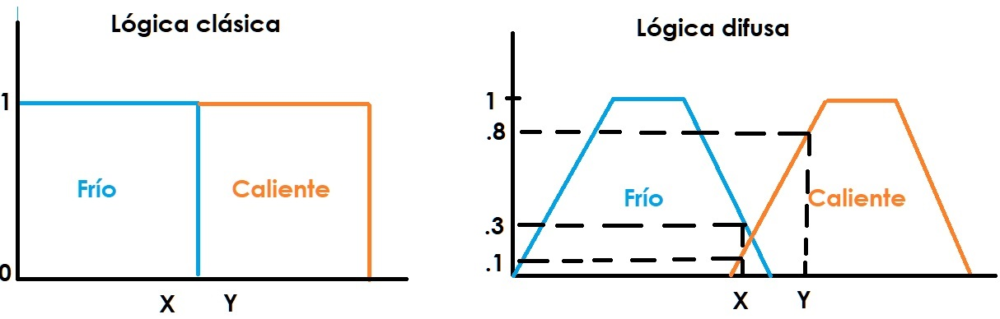

Otra de las ramas de la inteligencia artificial es la lógica difusa que le permite a un ordenador analizar información del mundo real en una escala entre lo falso y lo verdadero, manipula conceptos vagos, como "caliente" o "húmedo", y permite a los ingenieros construir dispositivos que juzgan la información difícil de definir.
También se utilizan mucho a día de hoy en la tecnología cotidiana, por ejemplo en cámaras digitales, sistemas de aire acondicionado, lavadoras, etc.
Los sistemas basados en lógica difusa imitan la forma en que toman decisiones los humanos, con la principal ventaja de ser mucho más rápidos.

* Ventajas y desventajas:
- Como principal ventaja, destacamos los resultados que nos ofrece, así como salidas de una forma veloz y precisa.
- Como principal desventaja, destacaríamos la dificultad de elegir una correcta función de pertenencia para los conjuntos difusos, ya que en ocasiones no es sencillo especificar el efecto de los cuantificadores de nuestro lenguaje en dicha función. El hecho de que cualquier función de pertenencia del sistema estuviese mal especificada, haría fallar, muy probablemente, todo el sistema completo.
* Usos:
- Su principal uso es para la resolución de problemas, principalmente los relacionados con control de procesos industriales complejos y sistemas de decisión en general, la resolución y la compresión de datos.
- Sistemas de control de acondicionadores de aire.
- Sistemas de foco automático en cámaras fotográficas.
- Optimización de sistemas de control industriales.
- Sistemas de reconocimiento de escritura.
- Mejora en la eficiencia del uso de combustible en motores.
- Sistemas expertos del conocimiento.
- Tecnología informática
- Bases de datos difusas: almacenar y consultar información imprecisa.